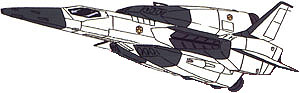

| FF-S3 Saberfish |
|
|  | |
General and Technical Data |
|
|
Model Number: FF-S3 Unit type: high-speed space fighter Armament: 4 x 25mm machinegun; 12 x large rocket |
|
| Technical and Historical Notes | |
|
In use by the EF Space Force, the Saberfish is a relatively simple and straightforward design. A large body accomodated oversized engines, giving it a great deal of speed, as well as substantial fuel tanks for long-range missions.
As the premier striker craft for the EF navy, it was intended to fly ahead under the cover of warship fire and engage the enemy at short range. Its primary armament consists of twelve anti-warship missiles, and is bolstered by the standard four 25mm machinegun set. While Saberfish pilots have found their missiles easily dodged, the payload delivered is enough to KO a mobile suit if it does hit home. Despite its high speed, the Saberfish is lacking in maneuverability, an area that mobile suits excell in. Even with crack pilots at the helm, Zeon's Zaku II mobile suits could outmaneuver the high-speed Saberfish and attack them from behind, to which the fighters had no real defense from. Following the development of the Federation's own line of mobile suits, the Saberfish has been slowly phased out of use. However, it is still more commonly seen on the battlegrounds than the GM, a fact that Federal commanders are trying to fix as soon as possible. |
 RPG quick stats sheet
RPG quick stats sheet